|
Rare
- Nightmare
- Lilim
- Lilith
- Skeleton Medalists
- Bear
- Double Grips
Rare Moster
ศัตรูในภาคนี้ บางตัวจะหายากมาก
เพราะมีอาศัยอยู่เพียงที่เดียวภายในเกมเท่านั้น
Nightmare
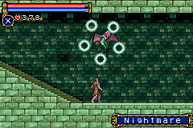
Exp : 2,000
Drop : Mind Fix, Needle Armor
อาศัยอยู่ใน Zone : Outer Wall ในห้องลับที่ต้องทำลายพื้นด้านล่าง
พบได้หลังจากที่ปราบ Boss : Camilla
ไปแล้ว
Lilim
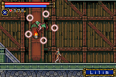
Exp : 8,000
Drop : Mind Hi, Dark Armor
อาศัยอยู่ใน Zone : Machine Tower ในห้องลับรูปตัว "L" กลับด้าน
เหนือห้องเซฟด้านล่าง
พบได้หลังจากที่ปราบ Boss : Camilla
ไปแล้ว
Lilith
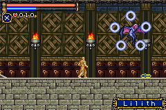
Exp : 20,000
Drop : Mind Ex, Sage Robe
อาศัยอยู่ใน Zone : Underground Warehouse ในห้องลับที่มี Succubus อยู่หน้าห้อง
พบได้หลังจากที่ปราบ Boss : Camilla
ไปแล้ว
* Note : Lilith เป็นศัตรูที่ให้ Exp มากที่สุด (หากไม่นับ Boss)
อีกทั้งยัง Drop : Mind Ex ซึ่งมีประโยชน์มาก
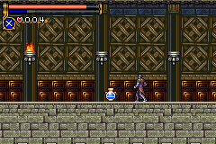
และยัง Drop : Sage Robe ที่เพิ่มค่า Int มากที่สุดด้วย
Mimic Candle
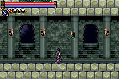
อาศัยอยู่ใน Zone : Audience Room บริเวณด้านขวาสุด ทางเดินยาวๆ ด้านใต้
Arena
พบได้หลังจากที่ปราบ Boss : Camilla
ไปแล้ว
Skeleton
Medalists
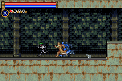
Exp : 1,500
Drop : Toy Ring, Bear Ring
อาศัยอยู่ใน Zone : Catacombs ในห้องลับบริเวณทางยาวๆ ที่ตกลงมาในตอนแรก
ภายในห้องลับจะมีห้องลับซ้อนอยู่อีกชั้นหนึ่งด้านบน
* Note : Skeleton Medalists วิ่งเร็วมาก ต้องใช้ DSS : Pluto + Griffin
เพื่อเพิ่มความเร็ว
* Note : หากใช้ DSS : Pluto + Black Dog ในขณะสวมใส่ Bear Ring จะแปลงร่างเป็น
"หมี"
Bear
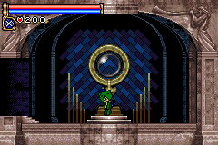
ไม่น่าเชื่อว่า Vampirekiller ต้องมากลายสภาพเป็นตัวตลกเช่นนี้ TT_TT
สามารถแปลงร่างเป็น "หมี" ได้โดยการใช้ DSS Pluto + Black Dog
ซึ่งปรกติจะกลายร่างเป็น "โครงกระดูก"
แต่หากสวมใส่ Bear Ring จะทำให้กลายร่างเป็น "หมี"
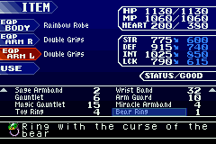
เมื่อเป็น "หมี" แล้ว จะกระโดดได้เพียงครั้งเดียว
(ทำ Double Jump ไม่ได้, ทำ Hight Jump ไม่ได้)
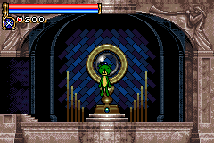
ส่วนรูปแบบการโจมตีจะเปลี่ยนแปลงไป
กด "โจมตี" ธรรมดา จะยิงจรวดออกจากหัว พลังโจมตีครึ่งหนึ่งของปรกติ
กด "บน" + "โจมตี" จะยิงจรวดออกจาก... ก้น : P พลังโจมตีครึ่งหนึ่งของปรกติ
กด "ล่าง" + "โจมตี" จะขว้างระเบิดลงพื้น พลังโจมตีเท่ากับการโจมตีปรกติ
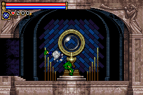
* Note : "หมี" ตัวนี้เป็นตัวละครจากเกม Rakuga Kids ของเครื่อง
N64
เป็นเกมประเภท Fighting ซึ่งเป็นเกมของค่าย Konami เช่นเดียวกัน
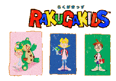
(Title)
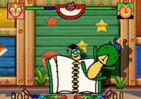
(Battle)
* Note : รูปเกม Rakuga Kids ก๊อบปี้มาจากเว็บ http://www.classicgaming.com/castlevania/cotm/bear.htm
Double Grips
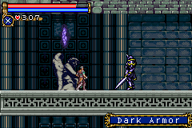
Dark Armor
Exp : 3,300
Drop : Platinum Armor, Double Grips
อาศัยอยู่ใน Zone : Observation Tower
* Note : Double Grips ต้องสวมใส่ 2 ข้าง จึงจะเพิ่มค่าพลังต่างๆ
ให้ +75
|